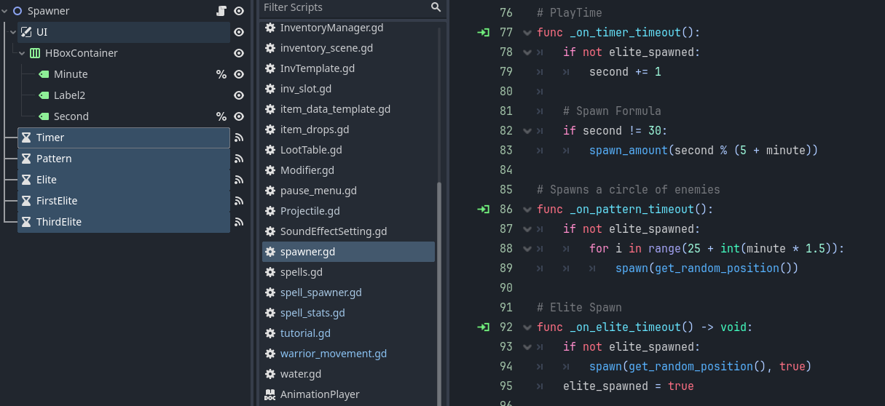

MagicKnight
Role: Gameplay Programmer
Status: Released
Time Frame: 5 days
Team Size: 2
Tech: Godot, GDScript
About
MagicKnight is a Vampire Survivors clone with a spell system inspired by Noita. We made this for our second game jam, using Godot, GDScript, and a bit of Aseprite.
You play as a knight who can craft and cast your own spell system using a drag and drop spell slot mechanic.
Introduction
This game is made by only 2 people and we only have 5 days to make it. This means that Ray and I both have to do a lot of different things, making it challenging to assign my contributions into a specific category/role. However, I will point out the things that I did in the project that I am most proud of:
- Recreated Noita-like spell system, which focuses heavily on modifiers and ordering of spells
- Programmed the spawning mechanics and various types of enemies
- Created healthbar system and the UI
- Balanced the game difficulty through playtesting
Dynamic Slot-Based Spell System
One of the most challenging part of this game is the spell system. The spells are stored in a list by player's choice using a drag-and-drop inventory system. The most important part of the spell are the Modifiers.
It only applies its effects to the next element spell in the slot, but multiple modifiers can be stacked on a single element spell.
Enemies Spawning Mechanics
For the enemies, I make use of Godot's Timer node by attaching it to my Spawner node. This allows me to implement the PlayTime and Spawn different types of enemy as I wish. I also made a simple formula that scales the numbers of spawns based in the time passed.
What I Learned
The problem with game jams is that you have very limited time to make a game, which makes it hard to write a clean, flexible, and abstract code. This makes it a bad practice incase we want to add a certain feature in the future. For this project, I harcoded most of the spell behaviour into some long functions without having the time to refactor it. It worked for the jam but quickly become difficult to expland.
However, I learned a lot when it comes to communication. Ray and I had to communicate a lot to make sure we are not stepping on each other's toes, especially when we have to do everything by ourselves. Seeing things come together was amazing, it feels great making everything work, and it is all thanks to communication.
For the next project, I would like to start a personal project that isn't a game jam. This is so I can study more advanced techniques and learn to write a modular systems from the beginning.